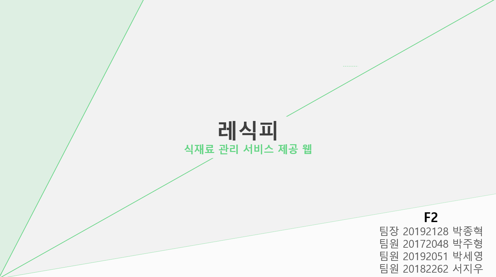

레식피
가지고 있거나 사려는 식자재를 등록하면 그에 맞는 레시피를 찾아주는 서비스입니다. 유통기한과 특이사항을 함께 저장하면 오늘 날짜 기준으로 남은 기간이 자동 계산되고, 게시판에서 사용자끼리 정보를 나눌 수 있습니다.

화면
구현한 기능
회원
- 로그인하면 커뮤니티, 식자재 등록, 레시피 제공 기능을 쓸 수 있습니다.
- 보유한 식자재에 특이사항과 유통기한을 입력해 두면 남은 기간이 계산되어 표시됩니다.
- 웹크롤링으로 가져온 레시피를 이미지와 함께 확인합니다.
- 게시판에서 다른 사용자와 정보를 주고받습니다.
막혔던 지점
Open API에 레시피 본문과 이미지가 함께 있는 데이터가 없었습니다
원래는 Open API로 수백 가지 레시피를 받아 제공할 계획이었습니다. 그런데 응답 데이터를 열어보니 레시피 내용과 이미지를 같이 담고 있는 항목이 없어, 화면에 필요한 형태를 만들 수 없었습니다.
API 쪽에서 해결하려다 시간이 계속 늘어나 웹크롤링으로 방향을 바꿨습니다. 특정 사이트에서 레시피를 크롤링해 이미지와 내용을 함께 가져와 출력하는 방식으로 마무리했습니다.